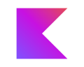
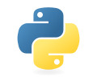

Servicios de alcance acotado en tres familias. Elija una variante tecnológica y revise sus entregables.
Sobre los stacks
Open source describe el software; AWS, Azure y Google Cloud describen alternativas de servicios o despliegue. Un stack abierto también puede alojarse en una nube comercial.
Software y aplicaciones
Q01Software Engineering
Landing page
Presentación de un producto, servicio o campaña con una acción principal.
Opciones de implementación
HTML + CSS + JavaScript (Tailwind y Vite opcionales)
Captación con una página directa
Una landing para presentar su oferta y llevar al visitante a consultar o registrarse. HTML estructura el contenido, CSS define el diseño y JavaScript añade interacciones.
Astro + TypeScript + Tailwind
Contenido rápido y fácil de ampliar
Astro organiza las secciones, TypeScript ayuda a mantener el código y Tailwind unifica el diseño. Adecuado para campañas y contenido con pocas funciones de aplicación.
El stack y el despliegue se eligen según sus sistemas, presupuesto y requisitos. Los ejemplos no implican que todas las tecnologías sean necesarias.
Ver entregables
Página adaptable a móvil
Contenido, imágenes y llamada a la acción
Publicación y formulario según alcance
Video del proyecto · próximamente
Q02Software Engineering
Sitio turístico por módulos
Destinos y experiencias organizados en fichas reutilizables.
Opciones de implementación
Astro + TypeScript (Tailwind opcional)
Muestre destinos y reciba consultas
Organice destinos, experiencias, itinerarios y formularios en módulos reutilizables. Astro publica el contenido; TypeScript permite mantener sus interacciones.
El stack y el despliegue se eligen según sus sistemas, presupuesto y requisitos. Los ejemplos no implican que todas las tecnologías sean necesarias.
Ver entregables
Catálogo de destinos y experiencias
Ficha por destino
Contacto; sin reservas ni pagos en el alcance inicial
Video del proyecto · próximamente
Q03Software Engineering
Web institucional
Información de la organización, sus servicios y canales de contacto.
Opciones de implementación
Next.js + TypeScript + MDX
Una web preparada para crecer
Next.js organiza páginas y funciones; MDX permite combinar contenido editorial con componentes. Para una institución que prevé nuevas secciones e integraciones.
Nuxt + Vue + Nuxt Content
Contenido institucional con Vue
Nuxt resuelve la estructura de la web y Nuxt Content organiza sus textos. Para equipos que prefieren Vue y una publicación de contenido basada en archivos.
El stack y el despliegue se eligen según sus sistemas, presupuesto y requisitos. Los ejemplos no implican que todas las tecnologías sean necesarias.
Ver entregables
Páginas institucionales
Navegación y contenido estructurado
Publicación y edición según el stack
Video del proyecto · próximamente
Q04Software Engineering
Web institucional / catálogo
Servicios o productos presentados en un catálogo navegable.
Opciones de implementación
Astro + TypeScript + Tailwind
Su catálogo disponible en una web clara
Astro presenta servicios o productos por categoría; TypeScript y Tailwind mantienen filtros, diseño y componentes. La compra en línea se incorpora solo si forma parte del alcance.
El stack y el despliegue se eligen según sus sistemas, presupuesto y requisitos. Los ejemplos no implican que todas las tecnologías sean necesarias.
Ver entregables
Catálogo y fichas
Búsqueda o filtros según alcance
Contacto por servicio
Video del proyecto · próximamente
Q05Software Engineering
Web con CMS
Sitio cuyo contenido puede actualizarse desde un gestor.
Opciones de implementación
WordPress + PHP
Edite contenidos desde un panel
WordPress permite actualizar páginas y publicaciones sin editar código. PHP soporta el CMS; se seleccionan tema y extensiones según las funciones necesarias.
Next.js + Strapi + PostgreSQL
Contenido separado de la aplicación
Strapi ofrece el panel editorial, Next.js presenta la web y PostgreSQL guarda el contenido. Útil cuando el mismo contenido debe alimentar varias experiencias.
El stack y el despliegue se eligen según sus sistemas, presupuesto y requisitos. Los ejemplos no implican que todas las tecnologías sean necesarias.
Ver entregables
Gestor de contenido
Plantillas y permisos acordados
Guía de publicación
Video del proyecto · próximamente
Q06Software Engineering
Tienda virtual
Catálogo, pedidos y pagos para vender por internet.
Opciones de implementación
Next.js + Prisma + PostgreSQL + pagos locales
Compra a medida con pagos locales
Next.js resuelve la tienda, Prisma conecta los datos y PostgreSQL registra productos y pedidos. La pasarela local se elige y valida por separado.
Medusa + Next.js + PostgreSQL + Redis
Comercio con un backend extensible
Medusa gestiona operaciones de comercio y Next.js la experiencia del comprador. PostgreSQL y Redis apoyan datos y procesos según la configuración.
Shopify + Liquid
Tienda sobre una plataforma administrada
Shopify aporta el panel comercial y Liquid personaliza la plantilla. Adecuado para concentrarse en catálogo y ventas; plan, aplicaciones y comisiones se acuerdan aparte.
WordPress + WooCommerce
Venda desde su sitio WordPress
WooCommerce añade catálogo, carrito y pedidos al CMS. La pasarela, el alojamiento y las extensiones se eligen según la operación de la tienda.
El stack y el despliegue se eligen según sus sistemas, presupuesto y requisitos. Los ejemplos no implican que todas las tecnologías sean necesarias.
Ver entregables
Catálogo y carrito
Integración de pago acordada
Pedidos y configuración de entrega
Video del proyecto · próximamente
Q07Software Engineering
Aplicación web
Una aplicación para resolver un proceso concreto del negocio.
Opciones de implementación
Next.js + Supabase
Portal con usuarios y datos conectados
Next.js construye la aplicación; Supabase aporta servicios de autenticación y datos. Para un proceso delimitado con formularios, permisos y registros.
React + FastAPI + PostgreSQL
Interfaz y API con responsabilidades claras
React presenta el flujo de trabajo, FastAPI expone la lógica del proceso y PostgreSQL conserva los registros. Permite integrar otras aplicaciones por API.
Laravel + Vue + Inertia
Gestión interna con reglas de negocio
Laravel concentra validaciones y procesos; Vue e Inertia construyen la interfaz. Para formularios, aprobaciones y operaciones de un equipo.
Angular + NestJS + PostgreSQL
Aplicación con estructura modular
Angular organiza la interfaz, NestJS la API y PostgreSQL los datos. Una alternativa para equipos que requieren módulos y contratos de integración definidos.
El stack y el despliegue se eligen según sus sistemas, presupuesto y requisitos. Los ejemplos no implican que todas las tecnologías sean necesarias.
Ver entregables
Flujo principal acordado
Datos y accesos según alcance
Pruebas y despliegue
Video del proyecto · próximamente
Q08Software Engineering
Aplicación móvil
Aplicación móvil para un caso de uso delimitado.
Opciones de implementación
Flutter + Firebase
Una base para Android e iOS
Flutter construye la interfaz móvil y Firebase aporta servicios según la necesidad, como autenticación y notificaciones. Las funciones de cada sistema se revisan al definir el alcance.
React Native / Expo + Supabase
Experiencia móvil con React
React Native y Expo organizan la aplicación; Supabase conecta usuarios y registros. Para equipos que quieren trabajar con TypeScript y componentes React.

Kotlin + Jetpack Compose
Aplicación enfocada en Android
Kotlin y Jetpack Compose permiten construir pantallas e integraciones propias de Android. El backend se elige según los datos y servicios requeridos.
Swift + SwiftUI
Aplicación enfocada en iPhone
Swift y SwiftUI permiten construir la experiencia nativa de iOS. Datos, autenticación y publicación se definen según el alcance.
El stack y el despliegue se eligen según sus sistemas, presupuesto y requisitos. Los ejemplos no implican que todas las tecnologías sean necesarias.
Ver entregables
Pantallas y flujo principal
Datos e integración acordada
Compilación y entrega para la plataforma elegida
Video del proyecto · próximamente
Q09Software Engineering
Software a medida
Herramienta específica para un proceso de su organización.
Opciones de implementación
Java + Spring Boot + React
Procesos empresariales con Java
Spring Boot organiza la API y las reglas de negocio; React presenta las pantallas. Para integrar un proceso con sistemas que ya utilizan Java.
.NET + Blazor
Solución dentro del ecosistema .NET
.NET implementa la lógica y Blazor las interfaces en C#. Útil cuando el equipo y sus integraciones ya trabajan con tecnología Microsoft.
Go + HTMX + PostgreSQL
Servidor y pantallas con una estructura simple
Go ejecuta el servicio, HTMX actualiza partes de la pantalla y PostgreSQL guarda los datos. Para herramientas enfocadas en formularios y operaciones concretas.
Electron + React + SQLite
Herramienta de escritorio con datos locales
Electron empaqueta la aplicación, React construye las pantallas y SQLite almacena registros locales. Sincronización y acceso compartido se añaden solo si se necesitan.
El stack y el despliegue se eligen según sus sistemas, presupuesto y requisitos. Los ejemplos no implican que todas las tecnologías sean necesarias.
Ver entregables
Módulos acordados
Integraciones y acceso
Pruebas y documentación
Video del proyecto · próximamente
Q10Software Engineering
App interna sin mucho código
Aplicación interna sobre datos y herramientas existentes.
Opciones de implementación
AppSheet + Google Sheets
De una hoja de cálculo a una app interna
AppSheet crea formularios, vistas y reglas sobre Google Sheets. Para registrar visitas, solicitudes o inventario sin construir una aplicación completa desde cero.
El stack y el despliegue se eligen según sus sistemas, presupuesto y requisitos. Los ejemplos no implican que todas las tecnologías sean necesarias.
Ver entregables
Formularios y vistas
Reglas del proceso
Accesos y guía de uso
Video del proyecto · próximamente
Agentes simples y RAG
Q11AI Engineering
Aplicación web con agente
Una web y un agente que comparten datos y ejecutan un recorrido definido.
Opciones de implementación
Next.js + TypeScript + FastAPI + LangGraph + SQLite local
Su proceso web con un agente integrado
Next.js muestra el espacio de trabajo; FastAPI y LangGraph coordinan herramientas y pasos del agente. SQLite sirve para una primera versión local; el despliegue productivo requiere revisar datos y permisos.
El stack y el despliegue se eligen según sus sistemas, presupuesto y requisitos. Los ejemplos no implican que todas las tecnologías sean necesarias.
Ver entregables
Interfaz web y agente
Fuentes y herramientas autorizadas
Registro de acciones y derivación a una persona
Video del proyecto · próximamente
Q12AI Engineering
Chatbot / agente
Asistente para consultas o tareas acotadas, con un canal y herramientas definidos.
Opciones de implementación
Node.js + WhatsApp Cloud API + Claude
Atención desde WhatsApp
Node.js conecta la WhatsApp Cloud API con Claude para responder dentro de reglas acordadas. Se define cuándo derivar a una persona y qué información puede consultar.

Python + FastAPI + LangGraph + pgvector + React
Asistente con acceso a documentos y herramientas
React muestra la conversación; FastAPI y LangGraph coordinan la lógica. pgvector permite recuperar fragmentos relevantes de las fuentes autorizadas.
El stack y el despliegue se eligen según sus sistemas, presupuesto y requisitos. Los ejemplos no implican que todas las tecnologías sean necesarias.
Ver entregables
Canal de conversación
Fuentes y acciones autorizadas
Derivación humana y pruebas de casos
Video del proyecto · próximamente
Q13AI Engineering
Agente simple con herramientas
Un agente para una tarea definida, con herramientas autorizadas y derivación humana.
Opciones de implementación
Open source / autogestionado
Atender consultas y derivar casos al equipo con contexto.
FastAPI + LangGraphAPI y herramientas del agente
Python + modelo local o APILógica y respuestas
Mayor control del alojamiento y personalización; requiere operar y mantener los componentes.
AWS
Atender consultas y derivar casos al equipo con contexto.
Amazon BedrockAcceso a modelos de IA
Lambda + S3Herramientas y archivos
Para integrar la solución con su entorno AWS y servicios administrados.
Azure
Atender consultas y derivar casos al equipo con contexto.
Azure OpenAIAcceso a modelos de IA
Container AppsAPI y herramientas
Para conectar la solución con el entorno Microsoft y sus políticas de acceso.
Google Cloud
Atender consultas y derivar casos al equipo con contexto.
Vertex AIModelos y embeddings
Cloud RunAPI y herramientas
Para integrar aplicaciones y datos con servicios administrados de Google Cloud.
El stack y el despliegue se eligen según sus sistemas, presupuesto y requisitos. Los ejemplos no implican que todas las tecnologías sean necesarias.
Ver entregables
Tarea y herramientas delimitadas
Validación antes de acciones sensibles
Pruebas y registro de ejecuciones
Video del proyecto · próximamente
Q14AI Engineering
RAG documental
Consultas sobre un conjunto de documentos, con referencia a las fuentes.
Opciones de implementación
Open source / autogestionado
Consultar documentos autorizados y devolver referencias a las fuentes.
LlamaIndex o LangChainRecuperación y fuentes
PostgreSQL + pgvectorÍndice documental
Mayor control del alojamiento y personalización; requiere operar y mantener los componentes.
AWS
Consultar documentos autorizados y devolver referencias a las fuentes.
Bedrock Knowledge BasesRecuperación sobre fuentes
Amazon S3Documentos autorizados
Para integrar la solución con su entorno AWS y servicios administrados.
Azure
Consultar documentos autorizados y devolver referencias a las fuentes.
Azure AI SearchBúsqueda documental
Azure OpenAI + Blob StorageModelos y documentos
Para conectar la solución con el entorno Microsoft y sus políticas de acceso.
Google Cloud
Consultar documentos autorizados y devolver referencias a las fuentes.
Vertex AI + Cloud RunConsulta y API
Cloud SQL + Cloud StorageÍndice y documentos
Para integrar aplicaciones y datos con servicios administrados de Google Cloud.
El stack y el despliegue se eligen según sus sistemas, presupuesto y requisitos. Los ejemplos no implican que todas las tecnologías sean necesarias.
Ver entregables
Ingesta de fuentes acordadas
Respuestas con citas
Pruebas de recuperación y acceso
Video del proyecto · próximamente
Q15AI Engineering
Clasificación y extracción con IA
Extraer campos o clasificar documentos de un flujo acotado.
Opciones de implementación
Open source / autogestionado
Extraer campos de documentos y enviar excepciones a revisión.
Python + OCR abiertoExtracción inicial
FastAPI + PostgreSQLValidación y registros
Mayor control del alojamiento y personalización; requiere operar y mantener los componentes.
AWS
Extraer campos de documentos y enviar excepciones a revisión.
Amazon TextractTexto, tablas y campos
S3 + Step FunctionsArchivos y proceso
Para integrar la solución con su entorno AWS y servicios administrados.
Azure
Extraer campos de documentos y enviar excepciones a revisión.
Document IntelligenceTexto, tablas y campos
Blob Storage + FunctionsArchivos y proceso
Para conectar la solución con el entorno Microsoft y sus políticas de acceso.
Google Cloud
Extraer campos de documentos y enviar excepciones a revisión.
Document AIExtracción documental
Cloud Storage + Cloud RunArchivos y validación
Para integrar aplicaciones y datos con servicios administrados de Google Cloud.
El stack y el despliegue se eligen según sus sistemas, presupuesto y requisitos. Los ejemplos no implican que todas las tecnologías sean necesarias.
Ver entregables
Esquema de salida y validaciones
Procesamiento de una muestra acordada
Registro de resultados y revisión humana
Video del proyecto · próximamente
Automatización y datos
Q16Data Engineering & Analytics
Automatización de Google Workspace
Automatizaciones dentro del entorno de Google Workspace.
Opciones de implementación
Apps Script
Menos trabajo repetitivo en Workspace
Apps Script conecta hojas, formularios, correo y documentos. Para generar reportes, enviar avisos o mover información mediante reglas y horarios definidos.
El stack y el despliegue se eligen según sus sistemas, presupuesto y requisitos. Los ejemplos no implican que todas las tecnologías sean necesarias.
Ver entregables
Flujo con Apps Script
Conexión a hojas, archivos o correo
Programación y registro de ejecución
Video del proyecto · próximamente
Q17Data Engineering & Analytics
Automatizaciones
Un flujo repetible entre herramientas o fuentes de datos.
Opciones de implementación
n8n + integraciones
Flujos visibles entre sus herramientas
n8n conecta aplicaciones mediante nodos y reglas. Permite programar tareas, recibir eventos y gestionar pasos de aprobación; cada integración depende de su API.
Python + pandas/Polars + otras librerías
Archivos y datos procesados por código
Python, pandas o Polars limpian, cruzan y transforman información. Para tareas repetibles con archivos o tablas y reglas de validación explícitas.
El stack y el despliegue se eligen según sus sistemas, presupuesto y requisitos. Los ejemplos no implican que todas las tecnologías sean necesarias.
Ver entregables
Mapa y ejecución del flujo
Validaciones y tratamiento de errores
Registro y documentación
Video del proyecto · próximamente
Q18Data Engineering & Analytics
Dashboards
Indicadores y visualizaciones para un área o proceso.
Opciones de implementación
Power BI + Power Query + DAX
Indicadores para decidir con una misma versión
Power Query prepara datos, DAX define medidas y Power BI presenta el tablero. Fuentes, frecuencia de actualización y permisos se acuerdan antes de construir.
Looker Studio + BigQuery / Sheets
Reportes conectados al entorno Google
Looker Studio presenta indicadores desde BigQuery o Sheets. Para compartir reportes con filtros y métricas acordadas; las fuentes determinan actualización y costos.
El stack y el despliegue se eligen según sus sistemas, presupuesto y requisitos. Los ejemplos no implican que todas las tecnologías sean necesarias.
Ver entregables
Conexión a fuentes acordadas
Indicadores y vistas
Actualización y permisos según la herramienta
Video del proyecto · próximamente
02Soluciones de negocio · Business
02
Soluciones empresariales integradas, en cinco especializaciones.
Para negocios pequeños, medianos y grandes. Abra cada ficha para ver alcances y alternativas tecnológicas.
Core
Implementación inicial con alcance funcional definido.
Advanced
Integraciones, automatizaciones y mayor personalización.
Enterprise
Seguridad, gobierno, operación, escalabilidad y arquitectura adaptada a requisitos empresariales.
Cómo leer Core, Advanced y Enterprise
Core, Advanced y Enterprise describen la profundidad de la solución, no el tamaño obligatorio del cliente. Una empresa mediana también puede necesitar controles avanzados. Las tecnologías dentro de cada ficha son alternativas de referencia, no componentes obligatorios ni productos ya construidos.
AI Engineering · 6
C01AI Engineering
AI Assistant Platform
Asistentes inteligentes para clientes y empleados.
Problema que resuelve: Equipos que responden las mismas consultas una y otra vez, en varios canales.
CoreAdvancedEnterprise
Opciones de implementación
Open source / autogestionado
Atender consultas y derivar casos al equipo con contexto.
FastAPI + LangGraphAPI y herramientas del agente
Python + modelo local o APILógica y respuestas
Mayor control del alojamiento y personalización; requiere operar y mantener los componentes.
AWS
Atender consultas y derivar casos al equipo con contexto.
Amazon BedrockAcceso a modelos de IA
Lambda + S3Herramientas y archivos
Para integrar la solución con su entorno AWS y servicios administrados.
Azure
Atender consultas y derivar casos al equipo con contexto.
Azure OpenAIAcceso a modelos de IA
Container AppsAPI y herramientas
Para conectar la solución con el entorno Microsoft y sus políticas de acceso.
Google Cloud
Atender consultas y derivar casos al equipo con contexto.
Vertex AIModelos y embeddings
Cloud RunAPI y herramientas
Para integrar aplicaciones y datos con servicios administrados de Google Cloud.
El stack y el despliegue se eligen según sus sistemas, presupuesto y requisitos. Los ejemplos no implican que todas las tecnologías sean necesarias.
Ver ficha completa
Beneficios esperados Atención disponible fuera de horario y respuestas consistentes.
Entregables principales
Asistente en los canales acordados
Base de conocimiento y reglas de derivación
Panel de conversaciones
Posibles integraciones Web, WhatsApp, Microsoft Teams, CRM
Video del proyecto · próximamente
C02AI Engineering
Knowledge Platform
Consulta y búsqueda del conocimiento empresarial.
Problema que resuelve: La información está repartida en documentos, carpetas y correos.
CoreAdvancedEnterprise
Opciones de implementación
Open source / autogestionado
Consultar documentos autorizados y devolver referencias a las fuentes.
LlamaIndex o LangChainRecuperación y fuentes
PostgreSQL + pgvectorÍndice documental
Mayor control del alojamiento y personalización; requiere operar y mantener los componentes.
AWS
Consultar documentos autorizados y devolver referencias a las fuentes.
Bedrock Knowledge BasesRecuperación sobre fuentes
Amazon S3Documentos autorizados
Para integrar la solución con su entorno AWS y servicios administrados.
Azure
Consultar documentos autorizados y devolver referencias a las fuentes.
Azure AI SearchBúsqueda documental
Azure OpenAI + Blob StorageModelos y documentos
Para conectar la solución con el entorno Microsoft y sus políticas de acceso.
Google Cloud
Consultar documentos autorizados y devolver referencias a las fuentes.
Vertex AI + Cloud RunConsulta y API
Cloud SQL + Cloud StorageÍndice y documentos
Para integrar aplicaciones y datos con servicios administrados de Google Cloud.
El stack y el despliegue se eligen según sus sistemas, presupuesto y requisitos. Los ejemplos no implican que todas las tecnologías sean necesarias.
Ver ficha completa
Beneficios esperados Búsqueda en lenguaje natural con referencia a la fuente.
Entregables principales
Indexación de fuentes documentales
Búsqueda con citas
Control de acceso por rol
Posibles integraciones SharePoint, Google Drive, gestores documentales
Video del proyecto · próximamente
C03AI Engineering
Intelligent Process Automation
Automatización inteligente de procesos.
Problema que resuelve: Procesos con decisiones manuales que frenan la operación.
CoreAdvancedEnterprise
Opciones de implementación
Open source / autogestionado
Coordinar tareas, aprobaciones y decisiones con seguimiento.
n8nFlujos y conectores
Python + FastAPIReglas e integraciones
Mayor control del alojamiento y personalización; requiere operar y mantener los componentes.
AWS
Coordinar tareas, aprobaciones y decisiones con seguimiento.
Step Functions + LambdaPasos y ejecución
EventBridgeEventos entre servicios
Para integrar la solución con su entorno AWS y servicios administrados.
Azure
Coordinar tareas, aprobaciones y decisiones con seguimiento.
Logic Apps + FunctionsConectores y ejecución
Service BusMensajes entre sistemas
Para conectar la solución con el entorno Microsoft y sus políticas de acceso.
Google Cloud
Coordinar tareas, aprobaciones y decisiones con seguimiento.
Workflows + Cloud RunPasos y ejecución
Pub/SubMensajes entre sistemas
Para integrar aplicaciones y datos con servicios administrados de Google Cloud.
El stack y el despliegue se eligen según sus sistemas, presupuesto y requisitos. Los ejemplos no implican que todas las tecnologías sean necesarias.
Ver ficha completa
Beneficios esperados Menos trabajo manual y trazabilidad de cada paso.
Entregables principales
Mapa del proceso
Flujo con agentes y reglas de negocio
Registro de ejecuciones
Posibles integraciones ERP, CRM, correo, hojas de cálculo
Video del proyecto · próximamente
C04AI Engineering
Sales & Customer AI Platform
Agentes para ventas y atención comercial.
Problema que resuelve: El equipo comercial no alcanza a responder y dar seguimiento a todos los clientes.
CoreAdvancedEnterprise
Opciones de implementación
Open source / autogestionado
Dar seguimiento a oportunidades y derivar conversaciones comerciales.
FastAPI + LangGraphAPI y herramientas del agente
Python + modelo local o APILógica y respuestas
Mayor control del alojamiento y personalización; requiere operar y mantener los componentes.
AWS
Dar seguimiento a oportunidades y derivar conversaciones comerciales.
Amazon BedrockAcceso a modelos de IA
Lambda + S3Herramientas y archivos
Para integrar la solución con su entorno AWS y servicios administrados.
Azure
Dar seguimiento a oportunidades y derivar conversaciones comerciales.
Azure OpenAIAcceso a modelos de IA
Container AppsAPI y herramientas
Para conectar la solución con el entorno Microsoft y sus políticas de acceso.
Google Cloud
Dar seguimiento a oportunidades y derivar conversaciones comerciales.
Vertex AIModelos y embeddings
Cloud RunAPI y herramientas
Para integrar aplicaciones y datos con servicios administrados de Google Cloud.
El stack y el despliegue se eligen según sus sistemas, presupuesto y requisitos. Los ejemplos no implican que todas las tecnologías sean necesarias.
Ver ficha completa
Beneficios esperados Seguimiento oportuno y registro de cada interacción.
Entregables principales
Agente para consultas y cotizaciones
Registro de oportunidades
Reportes de conversaciones
Posibles integraciones WhatsApp, CRM, catálogo de productos
Video del proyecto · próximamente
C05AI Engineering
Intelligent Document Processing
Procesamiento inteligente de documentos.
Problema que resuelve: Facturas, contratos o formularios que se procesan a mano.
CoreAdvancedEnterprise
Opciones de implementación
Open source / autogestionado
Extraer campos de documentos y enviar excepciones a revisión.
Python + OCR abiertoExtracción inicial
FastAPI + PostgreSQLValidación y registros
Mayor control del alojamiento y personalización; requiere operar y mantener los componentes.
AWS
Extraer campos de documentos y enviar excepciones a revisión.
Amazon TextractTexto, tablas y campos
S3 + Step FunctionsArchivos y proceso
Para integrar la solución con su entorno AWS y servicios administrados.
Azure
Extraer campos de documentos y enviar excepciones a revisión.
Document IntelligenceTexto, tablas y campos
Blob Storage + FunctionsArchivos y proceso
Para conectar la solución con el entorno Microsoft y sus políticas de acceso.
Google Cloud
Extraer campos de documentos y enviar excepciones a revisión.
Document AIExtracción documental
Cloud Storage + Cloud RunArchivos y validación
Para integrar aplicaciones y datos con servicios administrados de Google Cloud.
El stack y el despliegue se eligen según sus sistemas, presupuesto y requisitos. Los ejemplos no implican que todas las tecnologías sean necesarias.
Ver ficha completa
Beneficios esperados Menos errores de digitación y procesamiento más ágil.